View at 100 percent browser zoom. Any other zoom blurs or distorts the dither.
S0 = hazards v4 without dither. S6 = round 1. M = medium-strong (half of each shade band). H = heavy (full band, extra steps). Fire is not part of this test. Numbers and the recommendation per material are in README.md.
Five shades instead of three, zenith near black to a violet horizon. M: three steps per edge over half of each band. H: five steps, bands meet.
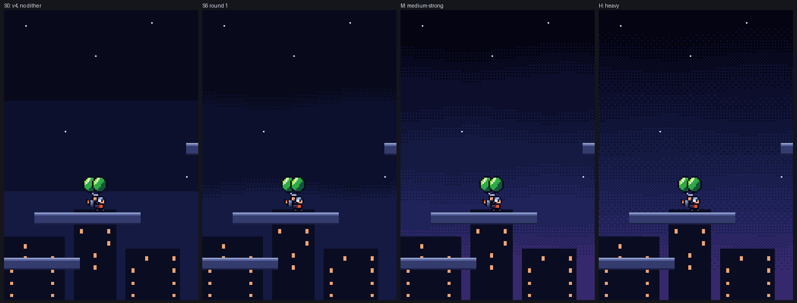
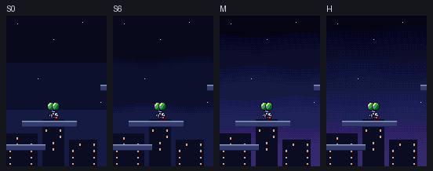
Ripple dashes between water shades; foam hard. Lurker: body shadow fades out in dashes, fin edge broken.
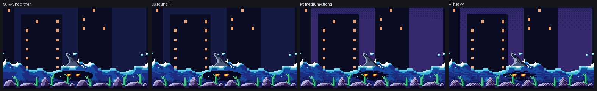
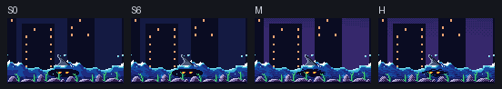
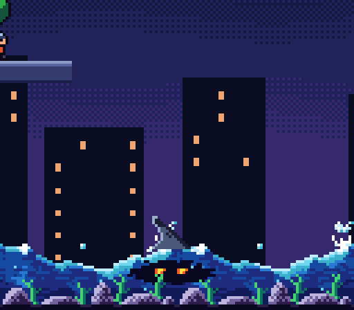
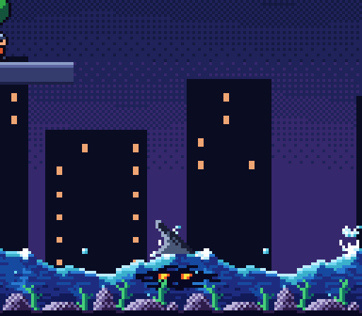
Checker blend in the melt, thinned in blobs; broken checker on the crust; the light on the buildings fades in ordered steps.
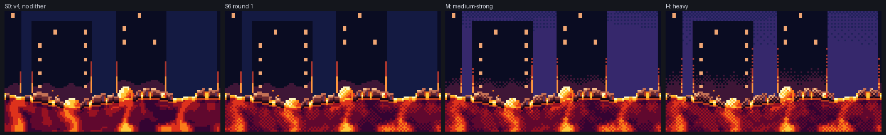
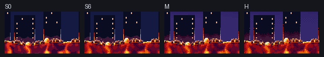
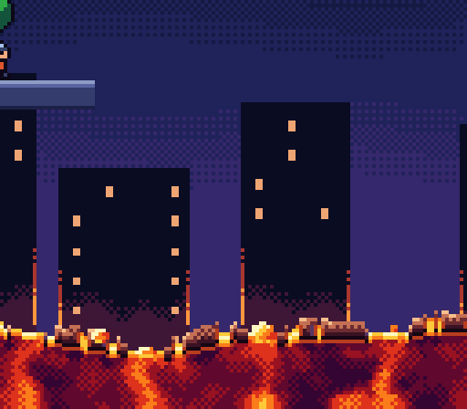
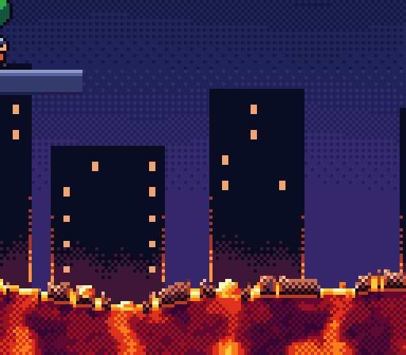
Broken checker along every steel band of 2 px or more on blades, collars and sleeves, riding with the blade.
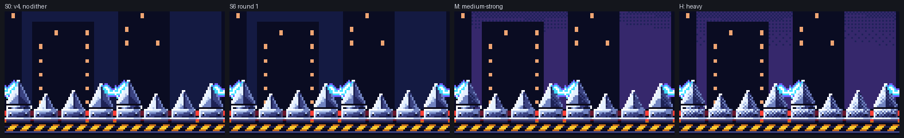
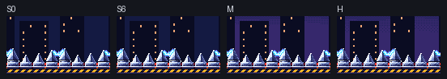
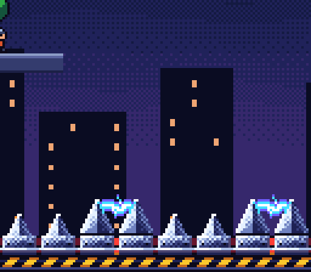